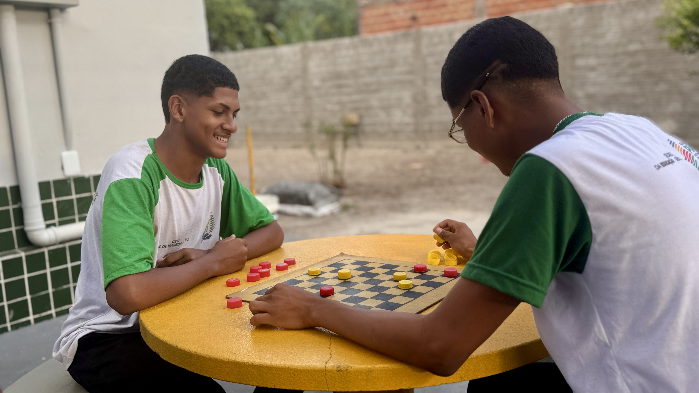

A equipa diretiva do CETI Job de Macêdo Brito é formada por profissionais dedicados à construção de uma escola acolhedora, organizada e comprometida com o sucesso dos alunos. Com foco na gestão participativa, trabalha para fortalecer o ensino, valorizar os professores e promover o desenvolvimento integral dos estudantes.

O CETI Job de Macêdo Brito é uma escola pública estadual localizada em Cocal de Telha - PI, que oferece o Ensino Médio regular e a Educação de Jovens e Adultos (EJA), comprometida com a formação integral dos estudantes, a escola busca oferecer um ensino de qualidade, inclusivo e cidadão.
O CETI Job de Macêdo Brito é uma escola pública estadual localizada em Cocal de Telha - PI, que oferece o Ensino Médio regular e a Educação de Jovens e Adultos (EJA). Comprometida com a formação integral dos estudantes, a escola busca oferecer um ensino de qualidade, inclusivo e cidadão.

A equipe diretiva do CETI Job de Macêdo Brito é formada por profissionais dedicados à construção de uma escola acolhedora, organizada e comprometida com o sucesso dos alunos. Com foco na gestão participativa, trabalha para fortalecer o ensino, valorizar os professores e promover o desenvolvimento integral dos estudantes.
Diretora
Coordenadora
Secretária
Bibliotecária
Adm. Financeiro
Espanhol, Cultura e Arte
Inglês
Geografia
História e Filosofia
Biologia e Geografia
Português
Desenvolvimento de Sistema
Desenvolvimento de Sistema
Desenvolvimento de Sistema
Matemática
Matemática
Educação Física
Inteligência Artificial e Educação no Trânsito
Física
Química